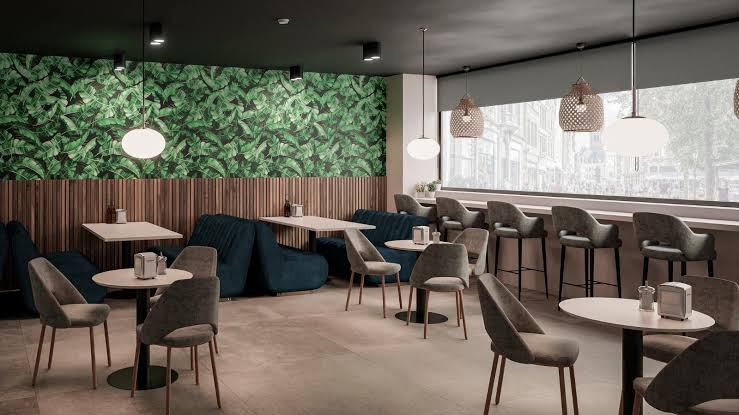

FRECUENCIA RECUPERADA
Triangulación de señal
Agente Marianne, hemos delimitado el origen de la transmisión al campus de Montilivi. Identifique tres puntos de referencia para desplegar las estaciones de rastreo.
IDENTIFICACIÓN DE ESTACIONES
SINCRONIZACIÓN DE ESTACIONES
Alinear la red de rastreo
Las estaciones están interconectadas. Al girar una de ellas, las demás también modificarán su orientación. Establezca los tres enlaces simultáneamente.
✓ TRIANGULACIÓN COMPLETADA
Ubicación identificada
Agente Marianne, las tres estaciones han confirmado el origen de la transmisión.

Diríjase a la ubicación indicada e inspeccione la zona utilizando el dispositivo ultravioleta proporcionado.
✓ CÓDIGO VALIDADO
Acceso autorizado
La clave ha sido verificada correctamente.
Hemos conseguido recuperar un nuevo archivo relacionado con el objeto desaparecido.
NUEVO ARCHIVO DESBLOQUEADO